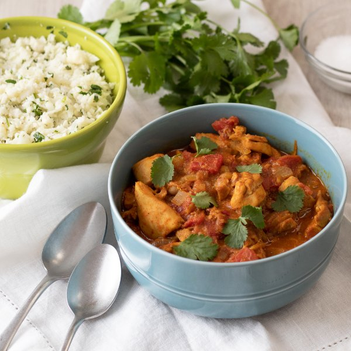

Chicken Korma with Cauliflower Rice

Nutrition (per serving)
628.3 kcalCalories
41.2 gProtein
26.7 gCarbs
42.2 gFat
Full nutrition table
| Calories | 628.3 kcal |
| Total fat | 42.2 g |
| Saturated fat | 27.2 g |
| Trans fat | 0.4 g |
| Cholesterol | 200.7 mg |
| Sodium | 255.4 mg |
| Carbohydrates | 26.7 g |
| Fiber | 10.2 g |
| Sugars | 11.8 g |
| Protein | 41.2 g |
| Potassium | 1509.6 mg |
| Calcium | 185.8 mg |
| Iron | 6.1 mg |
| Vitamin A | 1409.2 IU |
| Vitamin C | 108 mg |
| Vitamin D | 9.7 IU |
Cookware
Ingredients
- 1 medium headcauliflower
- 1 ½ lbchicken thighs, boneless skinless
- 1 small bunchcilantro
- 2 (14.5 oz) cansdiced tomatoes
- 4 clovesgarlic
- 2 (1 inch) piecesginger root
- 4 fl ozheavy whipping cream
- 2 mediumyellow onions
- almond meal/flour
- black pepper
- chili powder
- cumin, ground
- curry powder
- salt
- turmeric, ground
- virgin coconut oil
Steps
- Pat the chicken dry with paper towels, cut into bite-sized (1-inch) pieces, and set aside.1 ½ lb chicken thighs, boneless skinless
- Peel and small dice onion. Peel and mince (or press) garlic.2 medium yellow onions
4 cloves garlic - Heat a medium saucepan over medium-high heat.
- Wash, peel, and mince or grate ginger.2 (1 inch) pieces ginger root
- Once the saucepan is hot, add coconut oil and swirl to coat the bottom. Add the onions, garlic, and ginger; cook, stirring constantly until onions are softened, 3 to 4 minutes.2 tbsp virgin coconut oil
- Add the spices and cook, stirring constantly, until fragrant, 30 seconds.4 tsp curry powder
1 tbsp cumin
1 tsp turmeric
1 tsp chili powder - Add canned tomatoes, chicken, salt, and pepper; stir until well combined. Bring to a boil and then reduce heat to medium, cover and cook until chicken is cooked through, about 10 minutes.2 (14.5 oz) cans diced tomatoes
½ tsp salt
⅛ tsp black pepper - While the chicken cooks, preheat a large pot over medium-high heat.
- Wash the cauliflower and remove the leaves. Using a food processor or box grater, grate to rice-like texture.1 medium head cauliflower
- Once the pot is hot, add oil and swirl to coat the bottom. Add cauliflower and cook, stirring occasionally, 5 to 7 minutes.¼ cup virgin coconut oil
- Meanwhile, add the heavy cream and almond flour to the chicken mixture. Uncover and cook for another 5 minutes, stirring occasionally.4 fl oz (½ cup) heavy cream
2 tbsp almond meal/flour - Wash and dry cilantro. Shave leaves off the stems; discard the stems and mince the leaves. Set some cilantro aside to use as garnish.1 small bunch cilantro
- When cooked, remove the cauliflower from the heat, add remaining cilantro, salt, and pepper and stir to combine.½ tsp salt
⅛ tsp black pepper - To serve, place cauliflower rice on a plate and top with chicken korma. Garnish with cilantro and enjoy!